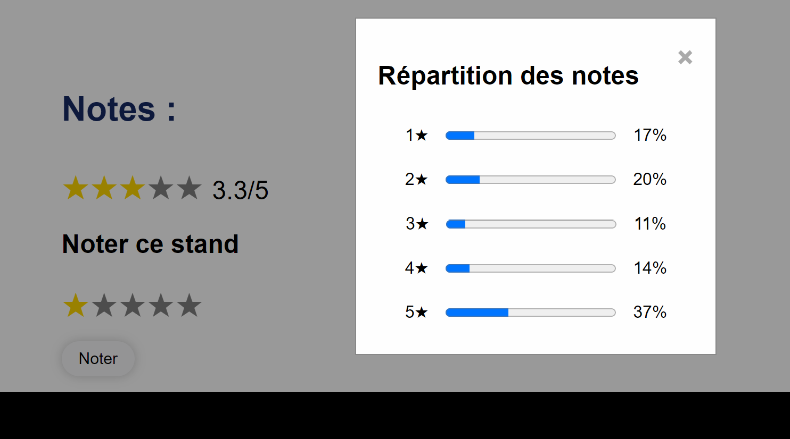
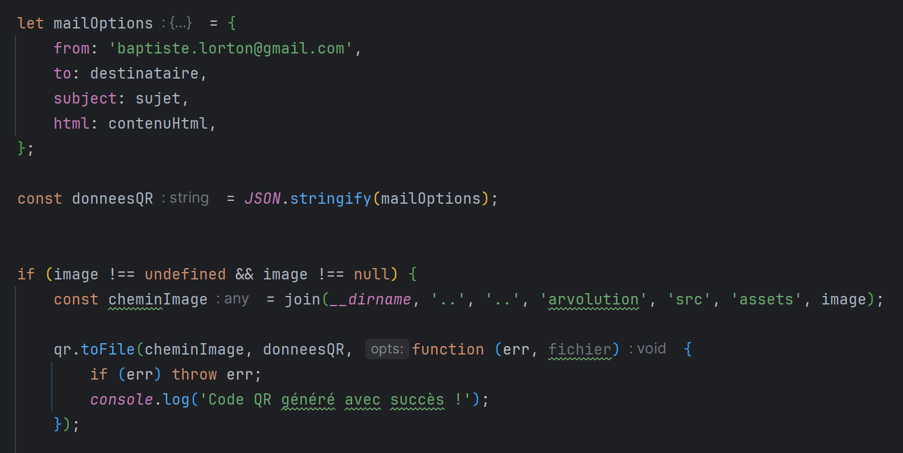
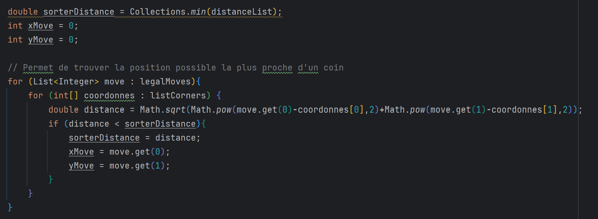
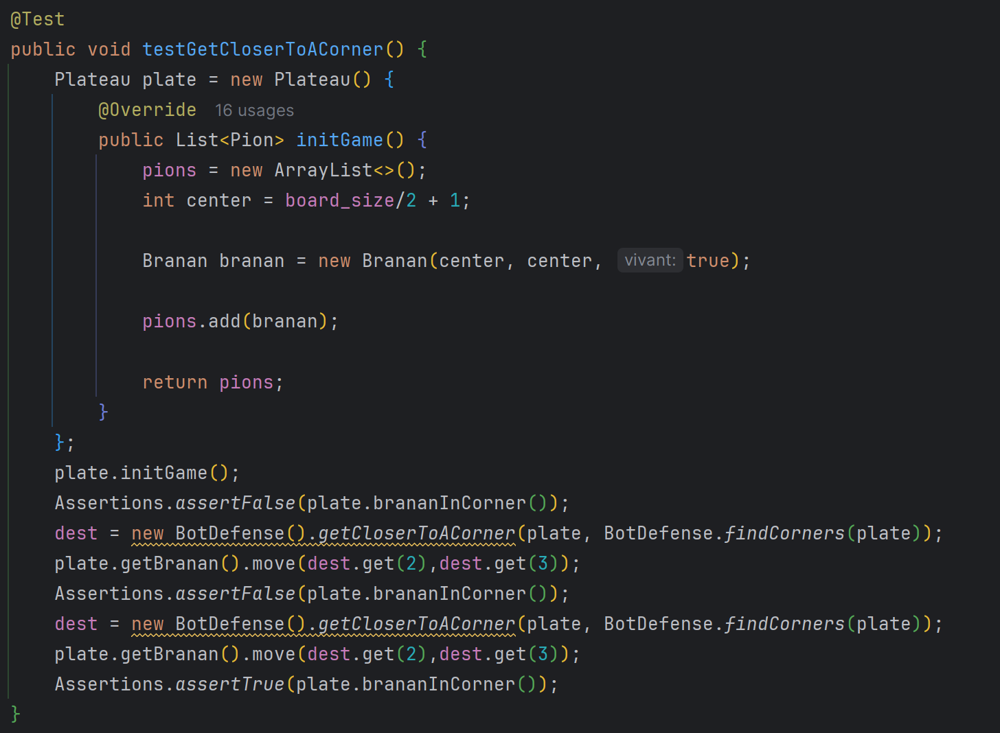

ARvolution

Présentation :
Dans ce projet nous devions créer un site web pour la gestion d'un salon de réalité virtuelle, nous avons donc appris à développer une application complète à partir d'exigences dans le cadre d'un projet de groupe de 4 personnes.
Système de notation
J'ai par exemple dû développer une interface utilisateur ainsi qu'appliquer des principes d'accessibilité et d'ergonomie sur la notation de produits qui étaient proposés à la vente. Ainsi, vous pouviez ajouter une note via un système d'étoiles, voir la moyenne ainsi que la répartition des notes.
Envoi de mail de confirmation
J'ai également mis en place un système d'envoi de mail de confirmation de commande. J'ai intégré un QR code contenant toutes les informations nécessaires. Cela m'a permis de comprendre comment concevoir et implémenter certaines fonctionnalités.
Brandub
Présentation :
Ce projet consistait à développer un jeu de plateau nommé "Brandub". Nous devions donc développer les règles ainsi que des IA capables de jouer. Ce projet nous a donc appris à construire des algorithmes.
Algorithme de défense
J'ai donc dû concevoir et implémenter un algorithme qui permet de défendre. Cet algorithme fonctionne par ordre de priorité. J'ai donc notamment mis en oeuvre des outils mathématiques afin de me rapprocher de l'objectif ou pour faire déplacer mes défenseurs vers le Branan (sorte de roi).
Tests unitaires
Afin de vérifier et valider la qualité de mon application, j'ai dû réaliser des tests unitaires sur les différentes fonctions qui composent mon IA de défense.
